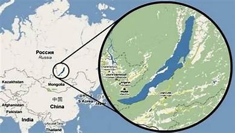
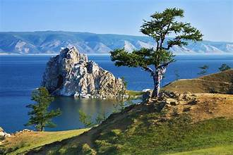
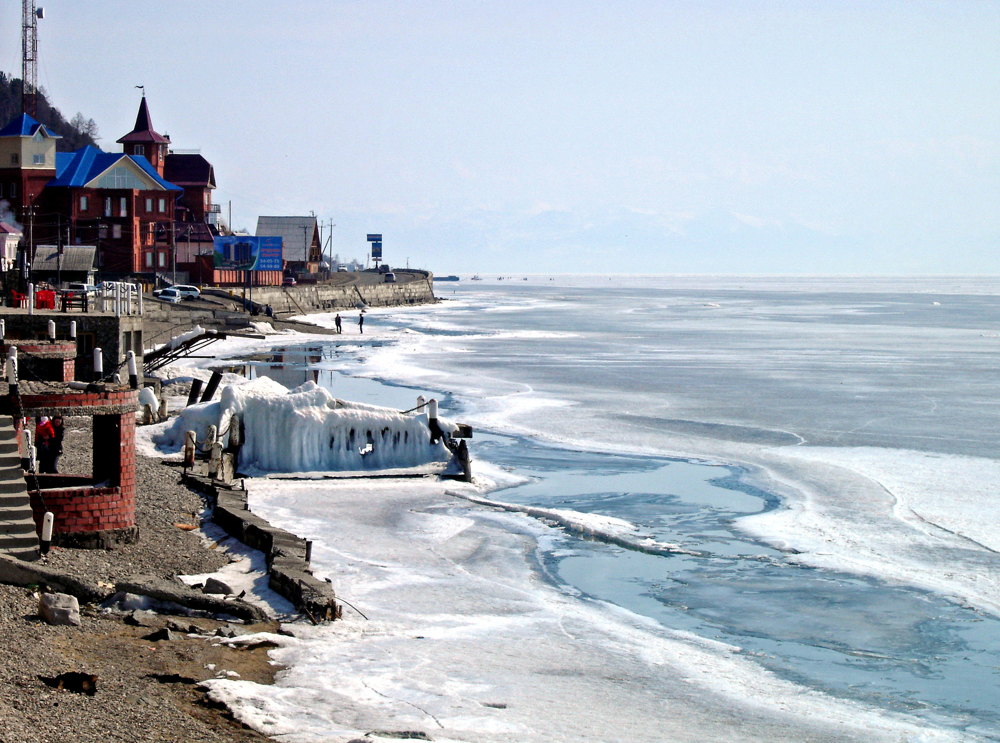
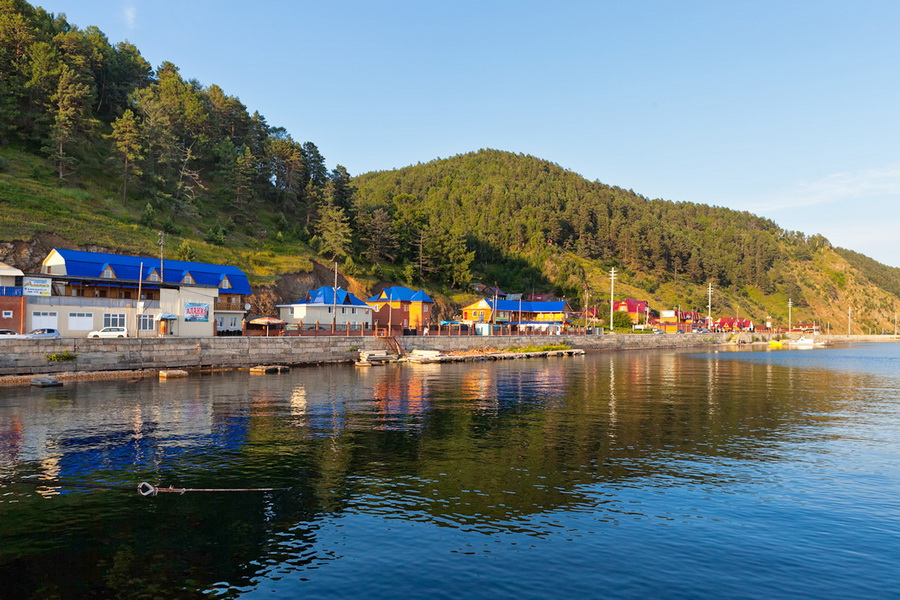
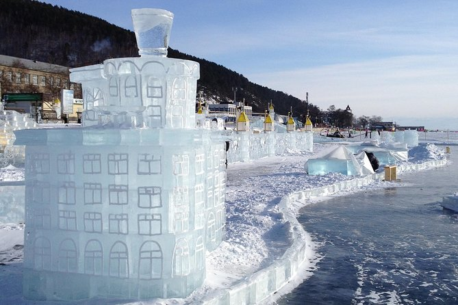

Lake Baikal
Lake Baikal is an ancient, rift valley lake located in southern Siberia, Russia. It is the world’s deepest and oldest freshwater lake, containing about one-fifth of the planet’s unfrozen surface fresh water. The lake’s unique ecosystem, exceptional biodiversity, and geological age make it one of the most scientifically and ecologically important natural sites on Earth
Geological Features and Formation
Lake Baikal lies in a continental rift zone where the Earth’s crust is slowly pulling apart, creating its vast depth and elongated shape. Sediment layers at the bottom provide a continuous geological record spanning millions of years, invaluable for studying Earth’s climatic and tectonic history. The lake’s clarity—often allowing visibility down to 40 meters—stems from the activity of endemic microorganisms that filter the water.
Biodiversity and Ecology
Baikal hosts more than 3,500 species of plants and animals, over half of which are endemic. Among its most iconic inhabitants are the Baikal seal, the world’s only exclusively freshwater seal, and the omul, a salmonid fish vital to local culture. The lake’s food web and isolated evolution make it a natural laboratory for ecological and evolutionary studies.
Cultural and Environmental Importance
For local Indigenous groups such as the Buryats, Lake Baikal holds deep spiritual significance. It is also a central feature in Russian literature, art, and conservation movements. Environmental pressures—industrial pollution, climate change, and tourism—pose ongoing challenges to its fragile ecosystem, prompting national and international conservation initiatives.
Tourism and Research
Lake Baikal attracts scientists and travelers alike for its natural beauty and ecological significance. Popular access points include Irkutsk and Listvyanka, serving as gateways for eco-tours, hiking, and winter ice expeditions. The Limnological Institute of the Russian Academy of Sciences conducts extensive research on its hydrology, geology, and biology, supporting global environmental understanding.
Key Facts
- Location: Southern Siberia, Russia
- Depth: 1,642 meters (5,387 feet)
- Age: Approximately 25 million years
- Volume: 23,600 cubic kilometers
- Clarity: Can see up to 40 meters deep
Gallery


